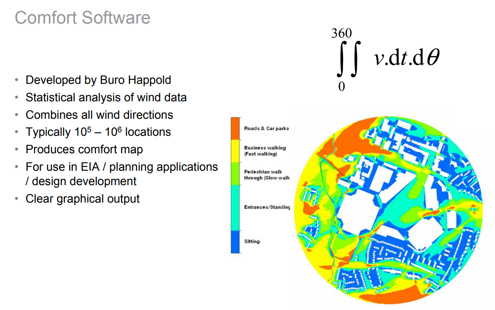

These are my slides from my talk in 2009 at the Chartered Institute of Building Service Engineers (CIBSE) London HQ about Buro Happold's work on External Comfort and Wind Modelling, covering Computational Fluid Dynamics (CFD), wind tunnel, desk studies and masterplanning studies for projects around the world.
I included some images from our comfort mapping software, which we used to give clear indications of which areas around a new building development would be suitable for what activities based on the frequency of strong winds. I don't know of any other teams around the world who were producing this level of information at that time.
The software was written rather improbably using the Microsoft Access database to read data from a set of (usually 12) csv files representing wind speeds from different directions. A popup window let the user enter coefficients describing the wind speed frequency distribution, represented by a Weibull distribution, for each direction. It was reliable, effective and much faster than the alternative I had available at the time - scripting using the built-in calculators in the Ansys CFX software we used for the wind speed analyses. The end results were then imported and visualised using CFX.
The image below maps out simulated wind (dis)comfort levels around a proposed scheme for the Everton Football Stadium in Kirkby, later abandoned. Areas in reddish orange have a high frequency of uncomfortable wind speeds, blues have low frequency of strong winds. White areas are inside buildings. This was used as part of the project's environmental impact assessment to show the effects of the protect on comfort levels for local people. The indicated activities - seating, walking, are based upon the Lawson criteria, a widely used set of criteria based on research carried out in the UK.

talks wind-engineering